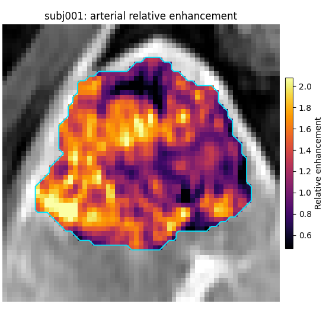
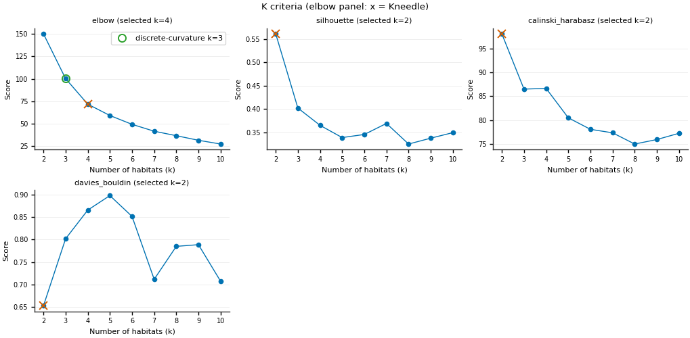
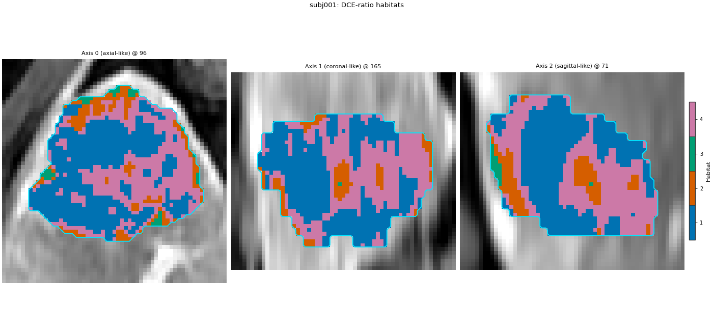
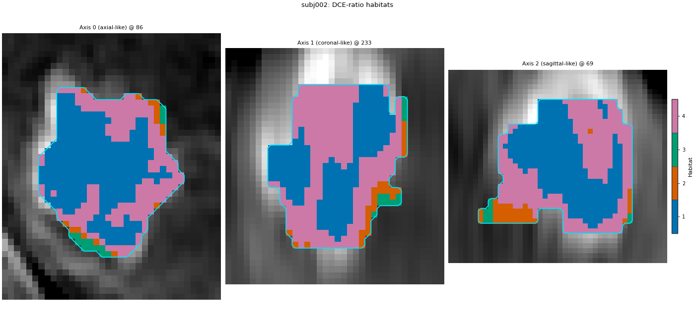

备注
Go to the end 以下载完整示例代码。
将自定义特征提取器作为插件#
背景。 内置体素提取器覆盖强度、公式、动力学与纹理。当研究需要自定义体素级计算时（此处为肝脏 DCE 强化与廓清比值），可编写小型提取器类，以某个名称注册，并像内置名称一样在 Spec 中使用。同一类随后也可作为可 pip 安装的包发布，使其他组按名称使用，无需复制代码或修改 HABIT。
目的。 你将编写 dce_hemodynamics 提取器、注册、在单受试者调用查看增强图、以其为 extract 阶段运行两步法分析，并了解如何通过 entry point 声明以便 pip install 后 HABIT 发现。
何时使用。 当所需列不是内置提取器且公式字符串（ 增强模式 ）不够，或要将特征定义作为包共享时。
分析定义。 经批准两步法，唯一偏差： extract 为自定义 dce_hemodynamics （四期 DCE 三幅比值图）而非四列原始强度。受试者级 winsorize + z-score、30 个 k-means 超体素、队列级 10 分箱、k-means 2..10 生境 elbow、最近质心分配与 seed 0 不变；页面在 subj001 + subj002 上拟合且仅保留 volume quantify 阶段。
关键术语。 完整定义见 概念 。
体素特征提取器 — 带
spec属性且__call__(subject)返回每 ROI 体素一行、每特征一列（VoxelFeatureField）的对象。registry —— HABIT 从名称（
"dce_hemodynamics"）到组件类的查找表；Spec("dce_hemodynamics", ...)经其找到类。入口点 —— 一个标准的 Python 打包钩子：你的包的
pyproject.toml在一个组下命名一个模块，而 HABIT 在请求时导入它，从而运行你的注册装饰器。相对增强 / 洗出 — 相对未增强期信号增益，以及动脉期后信号损失，均为比值。
加载队列#
四个 DCE 期相，ROI LAP 。两名受试者定义生境。sphinx_gallery_thumbnail_number = 1
from pathlib import Path
from typing import Optional, Sequence, Tuple
import matplotlib.pyplot as plt
import numpy as np
from habit.contracts import Subject, VoxelFeatureField, cohort_from_directory
from habit.datasets import fetch_demo
from habit.plugins import load_plugins
from habit.execution import backend_from_policy
from habit.recipes import Study
from habit.spec import HabitatSpec, Spec, Stage
from habit.spec.policy import RunPolicy
from habit.viz import (
plot_cluster_validation_from_report,
plot_habitat_overlay,
plot_voxel_texture_slice,
)
from habit.voxel_features import (
VoxelFeatureExtractorRegistry,
aligned_image,
build_voxel_field,
roi_voxels,
)
# Change DATA / MODALITIES / ROI to your preprocessed layout.
DATA = fetch_demo()
# Unenhanced, late-arterial, portal-venous, delayed (demo pack keys).
MODALITIES = ("pre_contrast", "LAP", "PVP", "delay_3min")
ROI = "LAP"
cohort = cohort_from_directory(DATA, modalities=MODALITIES, roi=ROI)
train = cohort[:2]
Path("out").mkdir(exist_ok=True)
HABIT demo data (cached)
DATA (preprocessed root): C:\Users\dongm\.habit_data\demo-data-v1\preprocessed
On-disk inventory of this folder:
subjects (5): subj001, subj002, subj003, subj004, subj005
image series: LAP, PVP, delay_3min, pre_contrast
mask keys: LAP, PVP, delay_3min, pre_contrast
example image: images/subj001/delay_3min/WATER__BH_Ax_LAVA_Flex_3min_Series0012.nrrd
example mask: masks/subj001/delay_3min/WATER__BH_Ax_LAVA_Flex_10min_Series0017_mask.nrrd
Your own data must use the same folder tree (change IDs / series names):
DATA/
images/<subject_id>/<modality>/<one image file>
masks/<subject_id>/<roi>/<one mask file>
Then load it with the same call the demos use:
cohort = cohort_from_directory(DATA, modalities=("LAP",), roi="LAP")
Swap DATA / modalities / roi to match your tree. Mask key is often the
same as one image series (here LAP).
编写并注册提取器#
类需要两样： spec 属性（名称+参数，记入基于它的每个结果的溯源）以及接受 一个 受试者并返回体素特征场的 __call__ 。装饰器将类注册到体素特征注册表名 "dce_hemodynamics" ；之后 Spec 可引用它。
三个公共助理负责记账：
roi_voxels— 图像网格上的 ROI 掩膜（掩膜与图像几何不同时会重采样，如演示），ROI 内选择器与体素坐标。aligned_image— 同一网格上读取的一期。build_voxel_field—— 用网格位置与 spec 包装值矩阵，以便画回图像并溯源。
DCE_FEATURES: Tuple[str, ...] = (
"relative_enhancement_lap", # (LAP - pre) / pre
"relative_washout_pvp", # (LAP - PVP) / (LAP - pre)
"relative_washout_delay", # (LAP - delay) / (LAP - pre)
)
@VoxelFeatureExtractorRegistry.register("dce_hemodynamics")
class DCEHemodynamics:
"""
Per-voxel DCE enhancement and wash-out ratios from four liver phases.
Args:
phases: Image keys in the order unenhanced, arterial, portal,
delayed.
roi: Mask key of the ROI.
eps: Small constant added to denominators so a zero signal does
not divide by zero.
"""
def __init__(
self,
phases: Sequence[str] = MODALITIES,
roi: Optional[str] = None,
eps: float = 1e-8,
) -> None:
if len(phases) != 4:
raise ValueError("dce_hemodynamics expects four phases: unenhanced, arterial, portal, delayed.")
self.phases: Tuple[str, ...] = tuple(phases)
self.roi = roi
self.eps = float(eps)
@property
def spec(self) -> Spec:
"""Return the name and parameters of this extractor, for provenance."""
return Spec(
"dce_hemodynamics",
{"phases": list(self.phases), "roi": self.roi, "eps": self.eps},
)
def __call__(self, subject: Subject) -> VoxelFeatureField:
"""
Compute the three DCE ratio columns for every ROI voxel.
Args:
subject: One subject holding the four phases and the ROI mask.
Returns:
A voxel feature field with one row per ROI voxel and the three
columns named in ``DCE_FEATURES``.
"""
# ROI mask aligned to the image grid, its selector, and coordinates.
mask, inside, voxel_index = roi_voxels(subject, self.roi)
# Read each phase on the mask's grid and keep only ROI voxels, so
# row i of every phase is the same voxel.
pre, lap, pvp, delay = (
aligned_image(subject, phase, mask, owner="dce_hemodynamics")[inside].astype(np.float64)
for phase in self.phases
)
# Arterial gain over the unenhanced signal (the enhancement ratio),
# and the fraction of that gain lost by the portal / delayed phase.
arterial_gain = lap - pre
values = np.column_stack(
[
arterial_gain / (pre + self.eps),
(lap - pvp) / (arterial_gain + self.eps),
(lap - delay) / (arterial_gain + self.eps),
]
)
return build_voxel_field(subject, mask, voxel_index, DCE_FEATURES, values, self.spec)
print("registered voxel extractors:", VoxelFeatureExtractorRegistry.available())
registered voxel extractors: ('concat', 'dce_hemodynamics', 'expression', 'kinetic', 'local_entropy', 'raw', 'voxel_radiomics')
在一个主题上提出#
提取器为普通对象：经注册表按名构建（与 Spec 相同查找）并在单受试者调用。
subject = train[0]
extractor = VoxelFeatureExtractorRegistry.create("dce_hemodynamics", phases=list(MODALITIES), roi=ROI)
dce_field = extractor(subject)
print(dce_field.feature_frame().describe().round(3))
fig = plot_voxel_texture_slice(
dce_field,
feature="relative_enhancement_lap",
anatomy=subject.image("LAP"),
roi_mask=subject.mask(ROI),
cmap="inferno",
axis=0,
crop_to="roi",
feature_label="Relative enhancement",
title=f"{subject.subject_id}: arterial relative enhancement",
)
fig.savefig("out/feature_plugin_enhancement.png", dpi=150, bbox_inches="tight")
plt.show()

relative_enhancement_lap relative_washout_pvp relative_washout_delay
count 34694.000 34694.000 34694.000
mean 1.331 0.076 0.251
std 0.388 0.473 0.524
min -0.017 -20.684 -22.421
25% 1.053 -0.089 0.077
50% 1.332 0.168 0.346
75% 1.605 0.346 0.536
max 3.238 43.429 54.429
F:\work\habit_project\habit\viz\voxel_texture.py:1019: UserWarning: Display geometry conflict: image/anatomy direction does not match mask/label direction. Using the mask/label direction so coronal/sagittal superior-up follows the labelled anatomy. Pass direction= to override.
direction, spacing = resolve_display_geometry(
在 Spec 中按名称使用它#
仅 extract 阶段命名新组件。比值可有长尾（动脉增益作分母很小），故受试者级 winsorize 重要：每列裁至该患者 1..99 分位，再 min-max 三列至 0..1。
spec = HabitatSpec(
name="dce_hemodynamics_two_step",
stages=(
# extract: the three DCE ratios from the registered extractor.
Stage("extract", Spec("dce_hemodynamics", {"phases": list(MODALITIES), "roi": ROI})),
# subject-level: clip to each patient's own 1st..99th percentile.
Stage("preprocess", Spec("winsorize", {"winsor_limits": [0.01, 0.01]})),
# subject-level: rescale each column to 0..1 per patient.
Stage("preprocess2", Spec("zscore")),
# partition: 30 supervoxels per tumour.
Stage("partition", Spec("kmeans", {"n_supervoxels": 30})),
# pool: stack both training subjects' supervoxels.
Stage("pool", Spec("pool")),
# cohort-level: 10 equal-width bins, edges from the training rows.
# fit: one k-means for the cohort, 2..10 habitats, elbow rule.
Stage(
"fit",
Spec("kmeans", {"min_habitats": 2, "max_habitats": 10, "validation": "elbow", "n_init": 10}),
),
Stage("assign", Spec("nearest_centroid")),
Stage("volume", Spec("volume")),
),
random_seed=0,
)
result = Study(spec).fit_predict(
train,
backend=backend_from_policy(
RunPolicy(backend="serial", on_subject_failure="continue")
),
)
model = result.habitat_model
print(model.summary())
# HABIT validation ``elbow`` is the same rule as ``kneedle``. It runs
# ``KneeLocator`` on k-means inertia (within-cluster sum of squares),
# curve convex, direction decreasing (Satopaa, Albrecht, Irwin, and
# Raghavan, 2011, Finding a "Kneedle" in a Haystack, IEEE ICDCS).
# Normalize k and inertia to the unit square, draw the chord from the
# first point to the last, and take the k farthest from that chord; a
# smooth curve often places this knee to the right of the bend a person
# sees. Literature "elbow" means inspecting within-cluster dispersion
# versus k (Thorndike RL, 1953, Who belongs in the family?, Psychometrika
# 18(4):267-276) — not a second-difference formula. The discrete-curvature
# elbow (visual elbow, computed) maximizes the second difference of
# inertia (HABIT pre-v1.0 elbow); it is not a Thorndike formula. The
# habitat map keeps the Kneedle K; other Ks are only in the table below.
# Full comparison: :doc:`/auto_examples/03_clustering/plot_03_clustering_algorithm`.
report = model.preprocessing_state["selection_report"]
candidates = [int(k) for k in report["candidates"]]
inertia = np.asarray(report["scores"][report["methods"][0]], dtype=float)
def discrete_curvature_elbow_k(cluster_range, inertia_scores):
"""Return k maximizing the second difference of inertia (pre-v1.0 elbow)."""
values = np.asarray(inertia_scores, dtype=float)
cluster_range = [int(k) for k in cluster_range]
if values.size < 3:
return int(cluster_range[int(np.argmin(values))])
return int(cluster_range[int(np.argmax(np.diff(values, n=2))) + 1])
k_kneedle = int(model.n_habitats)
k_discrete = discrete_curvature_elbow_k(candidates, inertia)
from habit.habitat_model import KMeansHabitatModelFitter
_k_table = {"elbow_kneedle": k_kneedle, "discrete_curvature_elbow": k_discrete}
for _name in ("silhouette", "calinski_harabasz", "davies_bouldin"):
_fitter = KMeansHabitatModelFitter(
min_habitats=2, max_habitats=10, validation=_name, n_init=10
)
_fitter.set_random_state(0)
_k_table[_name] = _fitter.fit(result.units, cohort=train).n_habitats
print("K by criterion:")
for _name, _k in _k_table.items():
print(f" {_name}: {_k}")
# Plot every supported k-means criterion (skip gap: expensive on this page).
_criteria = ("elbow", "silhouette", "calinski_harabasz", "davies_bouldin")
_vote = KMeansHabitatModelFitter(
min_habitats=2, max_habitats=10, validation=list(_criteria), n_init=10
)
_vote.set_random_state(0)
_vote_report = dict(
_vote.fit(result.units, cohort=train).preprocessing_state["selection_report"]
)
_vote_report["selected"] = {
"elbow": k_kneedle,
"silhouette": _k_table["silhouette"],
"calinski_harabasz": _k_table["calinski_harabasz"],
"davies_bouldin": _k_table["davies_bouldin"],
}
fig = plot_cluster_validation_from_report(
_vote_report,
title="K criteria (elbow panel: x = Kneedle)",
)
fig.axes[0].plot(
k_discrete,
float(inertia[candidates.index(k_discrete)]),
marker="o",
markersize=8,
markerfacecolor="none",
markeredgecolor="C2",
markeredgewidth=1.4,
linestyle="none",
label=f"discrete-curvature k={k_discrete}",
)
fig.axes[0].legend(loc="best", fontsize=8)
fig.savefig("out/feature_plugin_elbow.png", dpi=150, bbox_inches="tight")
plt.show()

Cohort.map[_ComputeUnits]: 0%| | 0/2 [00:00<?, ?it/s]
Cohort.map[_ComputeUnits]: 50%|█████ | 1/2 [00:02<00:02, 2.02s/it]
Cohort.map[_ComputeUnits]: 100%|██████████| 2/2 [00:03<00:00, 1.66s/it]
Cohort.map[_ComputeUnits]: 100%|██████████| 2/2 [00:03<00:00, 1.66s/it]
Cohort.map[_AssignPrecomputedUnits]: 0%| | 0/2 [00:00<?, ?it/s]
Cohort.map[_AssignPrecomputedUnits]: 50%|█████ | 1/2 [00:00<00:00, 3.02it/s]
Cohort.map[_AssignPrecomputedUnits]: 100%|██████████| 2/2 [00:00<00:00, 2.91it/s]
Cohort.map[_AssignPrecomputedUnits]: 100%|██████████| 2/2 [00:00<00:00, 2.91it/s]
HabitatModel kmeans-3432f3b65bfec11a
habitats : 4
features (3) : relative_enhancement_lap, relative_washout_pvp, relative_washout_delay
defining cohort : n=2
modalities : pre_contrast, LAP, PVP, delay_3min
cohort digest : cc1b16a34cc7478d...
produced by : habitat_model_fitter.kmeans
habit version : 3.0.0
random seed : 0
preprocessing state: inertia, selection_report, validation
K by criterion:
elbow_kneedle: 4
discrete_curvature_elbow: 3
silhouette: 2
calinski_harabasz: 2
davies_bouldin: 2
栖息地地图及其含义#
质心列为提取器的特征名，单位为分箱 0..9（经受试者级缩放与队列级分箱之后）。
centroids = np.asarray(model.centroids)
print("features:", list(model.feature_names))
for hid, row in enumerate(centroids, start=1):
print(f"habitat {hid}: " + ", ".join(f"{v:.2f}" for v in row))
table = result.features.frame.set_index("subject")
fraction_columns = [c for c in table.columns if c.endswith("_volume_fraction")]
print(table[fraction_columns].round(3).to_string())
for one, one_map in zip(train, result.habitat_maps):
fig = plot_habitat_overlay(
one.image("LAP"),
one_map,
title=f"{one.subject_id}: DCE-ratio habitats",
crop_to="labels",
)
fig.savefig(f"out/feature_plugin_habitats_{one.subject_id}.png", dpi=150, bbox_inches="tight")
plt.show()


features: ['relative_enhancement_lap', 'relative_washout_pvp', 'relative_washout_delay']
habitat 1: 0.94, 0.45, 0.39
habitat 2: -1.44, -1.78, -1.92
habitat 3: -1.77, -3.56, -4.58
habitat 4: -0.76, -0.04, 0.00
habitat_1_volume_fraction habitat_2_volume_fraction habitat_3_volume_fraction habitat_4_volume_fraction
subject
subj001 0.504 0.111 0.019 0.365
subj002 0.465 0.082 0.025 0.427
F:\work\habit_project\habit\viz\habitat_overlay.py:806: UserWarning: Display geometry conflict: image/anatomy direction does not match mask/label direction. Using the mask/label direction so coronal/sagittal superior-up follows the labelled anatomy. Pass direction= to override.
resolved_direction, resolved_spacing = resolve_display_geometry(
F:\work\habit_project\habit\viz\habitat_overlay.py:806: UserWarning: Display geometry conflict: image/anatomy direction does not match mask/label direction. Using the mask/label direction so coronal/sagittal superior-up follows the labelled anatomy. Pass direction= to override.
resolved_direction, resolved_spacing = resolve_display_geometry(
作为包发布#
在脚本里注册只适合你自己的运行。若要让他人无需复制类就能使用 Spec("dce_hemodynamics", ...) ，请把类放进一个包（例如 my_dce_pkg/features.py ），并在该包的 pyproject.toml 中把该模块声明到对应注册表的 entry-point 组下。组名为 "habit." + <registry domain> ；应向注册表查询，而不是手写：
print("entry-point group:", VoxelFeatureExtractorRegistry.entry_point_group())
entry-point group: habit.voxel_feature_extractor
声明 entry point 并加载#
随后在包的 pyproject.toml 中声明为：
[project.entry-points."habit.voxel_feature_extractor"]
dce_hemodynamics = "my_dce_pkg.features"
entry point 命名模块；导入时运行 @VoxelFeatureExtractorRegistry.register("dce_hemodynamics") 装饰器。 pip install my-dce-pkg 后，用户在构建 spec 前调用 load_plugins() 一次。它导入每个已安装 HABIT entry point 并报告加载项；此处未安装此类包，列表为空。
report = load_plugins()
print("loaded entry points:", report.loaded)
loaded entry points: ()
如何解读结果#
本页构建时：
注册后
dce_hemodynamics与内置名并列出现在注册表，Spec("dce_hemodynamics", ...)经Study运行如任何内置提取器。subj001（34694 ROI 体素）动脉相对增强中位数 1.33（IQR 1.05-1.61）。两个 wash-out 比值长尾（min -20.7 / -22.4，max 43.4 / 54.4），因分母动脉增益小；中位数 0.17 与 0.35。故 min-max 前 winsorize 对该特征集很重要。
elbow 规则保留 K = 5。分箱单位质心（增强、PVP 洗出、延迟洗出）：生境 3（7.4, 8.5, 8.5）强增强强洗出，生境 1（0.8, 1.6, 1.0）弱增强少洗出；其余居中。
Volume fractions: subj001 0.125 / 0.300 / 0.284 / 0.158 / 0.133 and subj002 0.102 / 0.375 / 0.454 / 0.000 / 0.068 for 生境 1 to 5; 生境 4 is absent from subj002.
入口点组打印为
habit.voxel_feature_extractor，且load_plugins()未加载任何内容，因为当前环境未安装插件包。
这些比率为两名演示患者上的示例公式，非经校验的灌注模型。
接下来去哪里#
无类的仅公式特征： 增强模式 。
并排组合提取器（
concat）： 体素特征 。含 raw 强度的已批准分析： 用 Spec 的两步法生境 。
全部注册表与协议： API 参考 。
脚本的总运行时间： （0 分 11.172 秒）